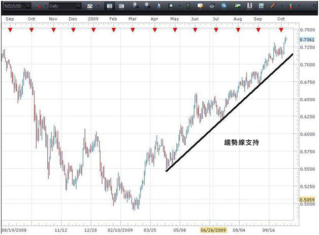

MS
支持及阻力
支援位及阻力位是技术分析中最重要的专桉。现在就看看图表吧。
正如您从上图可见，支持位是货币对难以跌穿的价格水准，而阻力位则是货币对难以升穿的价格水准。试想像支持位及阻力位之间是一个房间。支持位是地板，而阻力位是天花板。货币对将会在这两个水准之间移动，直至其中一个方向出现"突破"为止。
理论上，支持位是需求(购买力)强得足以阻止价格进一步下跌的价格水准。当中的理据是随着价格逐步接近支持位及在过程中变得越来越便宜，买家将会认为这是较划算的交易和更有可能买入。而由于交易变得越来越不划算，卖方便变得较不可能卖出。在该情景下，需求(买家)将会力压供应(卖家)，而这将会阻止价格跌破支持位。
能会想，支持位未必经常都守得住。当价格跌破支援位元后，显示卖家在与买家的角力之中胜出。跌破支援位元显示现在的交易心态是倾向卖多于买。于跌破支援位元后，交易者可以预期在买家建立持仓的另一个点将会出现另一个支持位。
另一方面，阻力位是供应(沽售力)强得足以阻止价格进一步上升的价格水准。背后的理据是随着价格逐步接近阻力位及在过程中变得越来越昂贵，卖家更有可能会卖出，而买家则不大可能会买入。在该情景下，供应(卖家)将会力压需求(买家)，而这将会阻止价格升穿阻力位。
就像支持位一样，阻力位未必经常能守得住，升穿阻力位元显示看好者(买家)力压看澹者(卖家)。由于阻力位已升穿，买家现在有更大意欲在更高的价格买入，因为价格继续向上移动，而且看似不大可能会回落。一旦升穿之前的阻力位，在卖家建立仓位的水准将会形成一个新的阻力位。
作为一项一般性原则，图表的时间段越长，已建立的支持位及阻力位将会变得更强。换句话说，日图所反映的支持位及阻力位将会较1小时图的支持位及阻力位更强。
就让我与您分享一个存在已久的支持位/阻力位原理。当跌破支持位后，该水准便会成为一个新阻力位。当阻力位升穿后，便会成为一个新支持位。现在回到先前所举的房间比喻。假设您处身于一幢两层高的楼房，而您跌穿地板掉到下一层。一直支持您的地板现在已变成您头顶上的天花板 … 而原本的支持位(前一个地板)便变成新阻力位(新天花板)。相反，若您跳高至穿越房间的天花板，您将会站在前一个天花板，亦即现在的新地板。
现在看看图表中这一个概念。
从上图可见，当货币对的买卖价向下走时，原来的支持线就会失守，然后成为目前的新阻力位。当升穿图表的阻力位元时，便会成为新支持位。
从下图可见，透过寻找图表的"挤塞"部份，可以识别出支援位及阻力位 … 该处是买家与卖家角力争夺控制权的部份。
此外，交易者可以连结最近的最低支持位及最近的最高阻力位以建立该些水准。

在升势中，一旦建立趋势线，当买卖价向下迫近支持位及受支持位所影响以致烛身的收市价不会低于该支持位时，即可建立新长仓。
理想地来说，若趋势线要视为有效，价格行为需要线上上显示出三个"触点"。在该三个触点出现前，还未有足够证据表示该趋势线就是真正的趋势线。
在跌势中，一旦趋势线已建立，每当价格迫近趋势线的阻力位，而烛身的收市价并没有高过该线时，便可建立短仓。
採用区间交易策略时，支援位元及阻力位十分重要。下图中，我们可以看到此澳元/日元货币对如何持续在已建立的支持及阻力水准之间进行交易。从事区间交易之交易者将会在支援位买入及在阻力位卖出。交易者可在突破出现前重複採取这个策略。

重要的是，交易者必须能够识别出主要支持位及阻力位，以成功地练习技术分析。由于诠释图表并非完全科学化，要建立准确的水准可说十分困难，单单注意到存在这些水准及它们在图表上的大概位置，已可增进交易者的分析技巧。
总括而言，若货币对的收市价处于重要的支持位元，便提示了交易者应注意买入压力及潜在转势的迹象。另一方面，若货币对正朝重要阻力位迈进，便提示了交易者应注意沽售压力及潜在转势的迹象。
若突破支援位或阻力位，那将是供应(卖家)及需求(买家)之间关係转变的迹象。若跌破支持位，卖家现正处于上风，而若升穿阻力位，则买家现正掌握控制权。